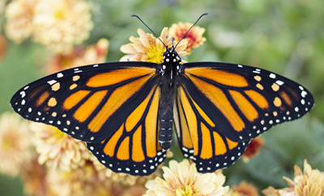

1. Arctic Penguins

2. Monarch Butterfly

3. Flying Seagull

4. Cartoon Dinosaur

5. Theater Stage Spotlight

6. Football Field Tic-Tac-Toe

Demonstrating modern CSS shadows, gradients, and filters using code only.
